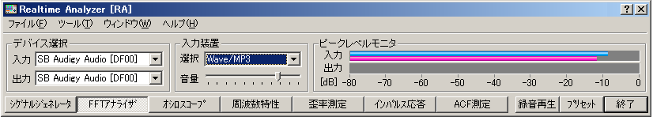
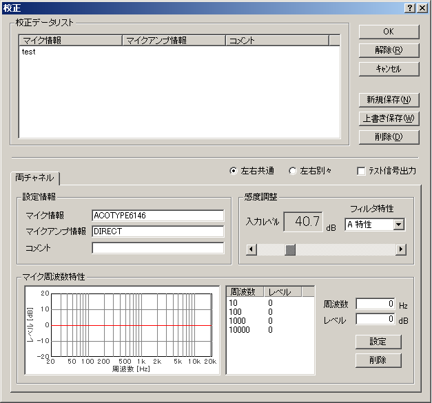
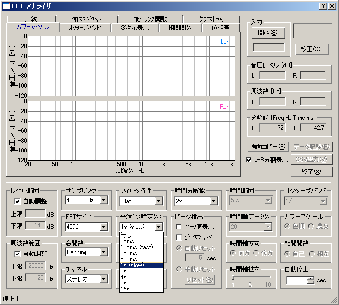

DSSF3 > RA > 操作マニュアル > 騒音計との接続
入力レベルの校正
騒音計は測定レンジが複数に分かれていますが、リアルタイムアナライザ（以下、RAと表記）は測定レンジが分かれていません。最大音量時にピークレベルモニタで-5dBくらいまでに収まるよう、インプットボリュームで適正に調整します。小さな音は、マイクアンプなどで増幅して、できる限り-5dB?-50dBの間に収まるよう調整します。一番きれいに測定できるのは、-5dB?-30dBの間です。

FFTアナライザを開いて、マイクの校正を行います。例えば、一般の生活騒音などの測定で、校正を40dBで行うと、入力のピークレベルモニタは-40dBなので、40dBに40dBを足して80dBAくらいまでの騒音が測定できる校正を行ったことになります。
下図は、一定の音量テスト信号を、マイクと騒音計を同一の場所（音源からのよりが同じ）で測り、騒音計の指示値40dBAをRAに入力しています。
FAST、SLOWなどの時定数についてはFASTにして、校正は一定の音量で行っています。

ここでしっかりあわせ、一定音量のテスト信号で測定しても、時々刻々と変化する騒音を測ってみると、騒音計とRA表示が違うことがありますが、測定をやり直す必要はありません。その理由のひとつは、RAが広い周波数領域を扱えることや、いろいろな時定数が指定できるからです。それらを工夫すれば、騒音計をシミュレートすることもできます。パソコンによって多少違いがありますが、実際に時定数などを変化させてみるなど、調整可能です。
もし、調整した騒音値より20dB大きな音を測定するには、例えば70dBA、80dBAを正確に測定したい場合、60dBAの校正をもうひとつ行っておきます。それで、静かな場所での測定は40dBで校正したデータを選択して測定し、うるさい場所での測定は60dBで校正したデータを選択して測定を行います。そうすることにより、より正確に測定することができます。必要に応じて、設定は同様に増やすことも可能です。
※FFTアナライザの時定数
FFTアナライザで、平滑化の設定を時定数（ms、s）が設定できます。騒音計の規格であるfast(125 ms)/slow(1s)を選択すれば、騒音計がシミュレートできます。

たとえば、1/3オクターブバンド分析の機能を装備した騒音計は高価ですが、騒音計のアナログ出力をRAに取り込んで、RAで1/3オクターブ分析することがが可能です。さらに3次元表示などの分析も行えるため、パソコンが「1/3オクターブ分析+ピークホールド+3次元分析機能付き騒音計」として代用できることになります。
また、騒音計は時定数を持っていて、SLOWは1秒、FASTは125m秒です。これは、騒音値を測定するときに、その時間を必要とし、その時間の音圧レベルの平均値を騒音値とすることになります。従って、たとえば50m秒しか続かないパルス音や変動が激しい衝撃音のようなもの、普通の騒音計がサポートしない低周波、高い周波数の音などは、正しく測定できません。しかし、RAは時定数設定ができるので、通常騒音計では測定できない音についても測定が可能です。このようにRAによって騒音計の機能を大幅にアップさせることが可能です。
DSSF3 > RA > 操作マニュアル > 騒音計との接続